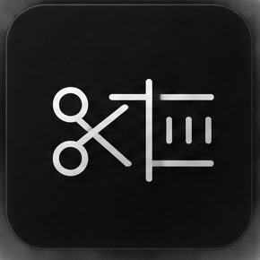
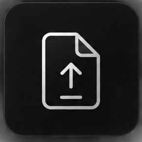
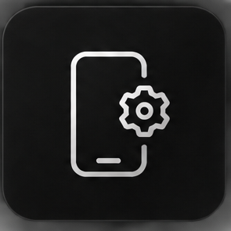
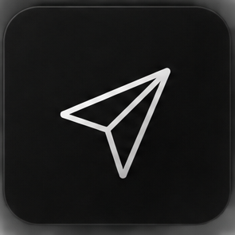

01
Настройки съёмки
Подготовка качественного исходника: разрешение, частота кадров и экспозиция до обработки.
Два пошаговых метода съёмки, обработки и экспорта видео для TikTok. Выбери версию под своё устройство и подготовь видео к публикации.
РЕЗУЛЬТАТ
Один и тот же контент может выглядеть совершенно по-разному в зависимости от того, как ты его снимаешь, экспортируешь и загружаешь.
Исходный пример сравнения из сайта. Версия метода для этого примера не указана; он не подтверждает одинаковый результат PC и Mobile.
ЧТО ВНУТРИ
Выбери устройство, чтобы посмотреть состав подходящей версии.
Компьютер · Topaz Video AI · Adobe After Effects · HandBrake
Подготовка качественного исходника: разрешение, частота кадров и экспозиция до обработки.

Topaz Video AI и Adobe After Effects: улучшение детализации и работа с изображением.

Подготовка итогового файла: разрешение, FPS, битрейт и формат для публикации.

Проверка готового видео и настроек перед загрузкой.

Последовательность загрузки и сравнение исходного файла с опубликованным роликом.
Android + iPhone · CapCut / VN · Без компьютера
Android и iPhone: стандартная камера или Blackmagic Camera, если приложение поддерживается устройством.
Работа с видео в CapCut или VN без компьютера; доступность функций зависит от версии приложения.
Резкость, цвет и параметры итогового файла с учётом возможностей телефона и редактора.
Различия настроек и функций двух платформ. Проверяй доступность инструментов на своём устройстве.
Подготовка видео к публикации в TikTok и проверка результата после загрузки.
ПРОБЛЕМА
Ты можешь снять качественное видео, красиво его обработать и получить отличный результат в галерее.
Но после публикации TikTok пережимает файл — и видео уже выглядит совсем не так.
Важно понимать не только настройки TikTok, но и весь процесс до момента загрузки.
ОБЩИЙ ПОДХОД
Какие параметры использовать до начала монтажа.
Как не потерять качество во время обработки.
Разрешение, FPS, bitrate и другие важные параметры.
Как правильно подготовить видео перед публикацией.
ВЫБЕРИ СВОЮ ВЕРСИЮ
Для компьютера или смартфона. Каждая версия приобретается отдельно, разовая оплата.
TIKTOK QUALITY METHOD
Для обработки на компьютере
6 990 ₸
Разовая оплата
Что потребуется
Нужен компьютер, соответствующий требованиям используемых программ. Лицензии на программы приобретаются отдельно.
TIKTOK QUALITY METHOD
Для Android и iPhone · без ПК
2 990 ₸
Разовая оплата
Что потребуется
Нужен Android-смартфон или iPhone с совместимым редактором. Платные функции приложений не входят в стоимость метода.
Кнопка откроет чат @mukanga1iev в Telegram. Уточни совместимость и условия до оплаты; доступ отправляется после её подтверждения. Если текст не подставился, напиши название выбранной версии.
TikTok повторно сжимает видео. Обработка не гарантирует отсутствие потерь: результат зависит от исходника, устройства, настроек и работы платформы.
FAQ
PC Edition — для обработки на компьютере через Topaz Video AI, Adobe After Effects и HandBrake. Mobile Edition — для работы на Android или iPhone без компьютера. Это два отдельных продукта.
Мобильная версия рассчитана на Android и iPhone. Доступность приложений и отдельных функций зависит от модели телефона, системы и версии редактора. Перед покупкой можно уточнить совместимость в Telegram.
Для PC Edition нужен компьютер, соответствующий требованиям Topaz Video AI, Adobe After Effects и HandBrake. Скорость обработки зависит от оборудования и исходного видео. Уточни совместимость до оплаты.
Нет. Стоимость относится к цифровому методу. Программы, подписки и платные функции приложений при необходимости приобретаются отдельно.
Гарантии нет: TikTok сжимает загруженные видео. Метод помогает подготовить файл и уменьшить лишние потери, но результат зависит от исходника, настроек, устройства и платформы. Результаты PC и Mobile могут отличаться.
Да, исходник не обязательно должен быть снят в 60 FPS. Настройки обработки и экспорта выбираются с учётом исходной частоты кадров. Мобильная версия не включает компьютерные инструменты Topaz.
Выбери PC Edition за 6 990 ₸ или Mobile Edition за 2 990 ₸ и напиши в Telegram @mukanga1iev. После согласования условий и подтверждения оплаты тебе отправят доступ к выбранному материалу.
После предоставления доступа возврат обычно не предусмотрен, поскольку это цифровой продукт и покупатель получает полный материал. Исключения — случаи, когда доступ не предоставлен или возврат требуется по закону. Уточни условия до оплаты.
ПРАВА И ИСПОЛЬЗОВАНИЕ
TikTok Quality Method является авторским цифровым продуктом. Покупатель получает личный доступ к материалу для собственного использования.
Разрешается использовать полученные знания для обработки и публикации собственных видео.
Запрещается распространять, копировать, перепродавать или передавать третьим лицам презентацию, изображения, текст, настройки и другие материалы продукта полностью или частично.
Обе версии предназначены для личного использования. TikTok повторно сжимает видео; отсутствие потерь не гарантируется. Результат обработки может отличаться в зависимости от исходного видео, устройства, версии программ и выбранных настроек.
© 2026 Инал Есетайулы. Все права защищены.
КОНТАКТЫ
Следи за моим контентом или напиши напрямую.